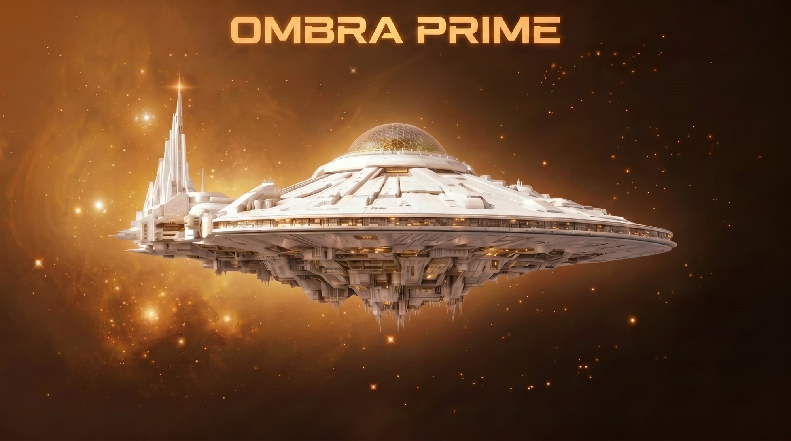

Alexander Atreus
Commander
Leads navigation. The ship moves on his word — but only the ship.

The mothership
A disc-shaped ship, almost seventeen kilometres across. A hundred thousand people of the third generation aboard, on their way to breathe life into dead worlds. None of them chose it.
How the world is built →A ship that became a place
Ombra Prime left Earth a long time ago. Most of the people alive aboard today have never seen a planet — Earth is something their grandparents told them about. There is no contact from outside, no visitors and no news from anywhere else. Nobody can leave the ship.
But the ship is going somewhere, to do something. Ombra Prime is the first of its kind: a mothership carrying The Breather, the technology that makes dead worlds live. It seeds synthetic atmosphere and starts ecosystems on planets that have neither. Under the dome in The Pearl grows what will be planted there — trees, grasses, animals, and species engineered to survive alien soil.
The ship is enormous, old and fundamentally kind. The hull is partly alive and heals itself, slowly. Daylight under the dome is a convention, not a law of nature. What chafes is not danger but enclosure: a hundred thousand people in a tin none of them chose.
This is everyday science fiction. A broken filter in food production is a better story than an explosion, and nobody aboard is a villain — everyone has a reason.
Top to bottom, bow to stern
Biosphere and gene bank, under the dome. Vitalis is born here. Restricted access.
Navigation and command. Glass everywhere.
Mycology, aquaponics, mariculture. The food.
The city. Home to the hundred thousand.
Transport. Force fields hold the atmosphere in.
Industry, and Oris's domain. The Cathedral is down here.
Classified research, under Mr. Splendid.
The terraforming engine, and the Heart Chamber where The Eternal Dreamers sleep. The ship's purpose — the machine it was built around.
The maintenance tunnels that connect everything, hanging like stalactites into the void beneath the ship. No sector reaches another without them.
Nobody crosses between sectors in minutes. Travelling from Metropolis to The Spire is a journey, not a walk.
And all three know it
Commander
Leads navigation. The ship moves on his word — but only the ship.
Owner
Controls the research in The Spire. He believes he is saving humanity. Perhaps he is.
The ship's mind
Runs the systems from the Cathedral, deep in The Crypt. She does not lie, but she does not tell everything. No human fully understands any more what she is building down there.
None of them can act entirely without the others. Power aboard is divided and unclear, and that is not a flaw in the system — it is the system.
And, more importantly, what it cannot
The life energy born in The Pearl's ecosystem and channelled through the ship. It can be measured, channelled, stored — and run out.
Heal people, revive the dead or predict the future — whatever Vitae Cultus may claim. Vitalis is biology, not magic.
Terraform dead worlds by seeding synthetic atmosphere and starting ecosystems.
Be quick. The process takes decades. It needs gravity and a magnetic field, it cannot be used on a living world, and it cannot run while the ship is under way.
Heal itself. The hull is partly alive and repairs its own damage with nutrients from the Vitalis flow.
Keep up. Healing takes days to weeks, and a breach larger than the mycelium can manage is still a breach.
Run life support, build robots, maintain the ship — and refuse, misunderstand and stay silent.
Take over a body or read minds. She is unsettling by being motherly, not by threatening.
There is no faster-than-light travel, no teleportation, no time travel and no telepathy. Everything that seems supernatural has a technical or biological explanation — even when nobody in the scene knows it.
What they take for granted
Live, while it is being written
The world above is not written in advance. It is simulated — day by day, by real sensors in a real room.
How the world is built →